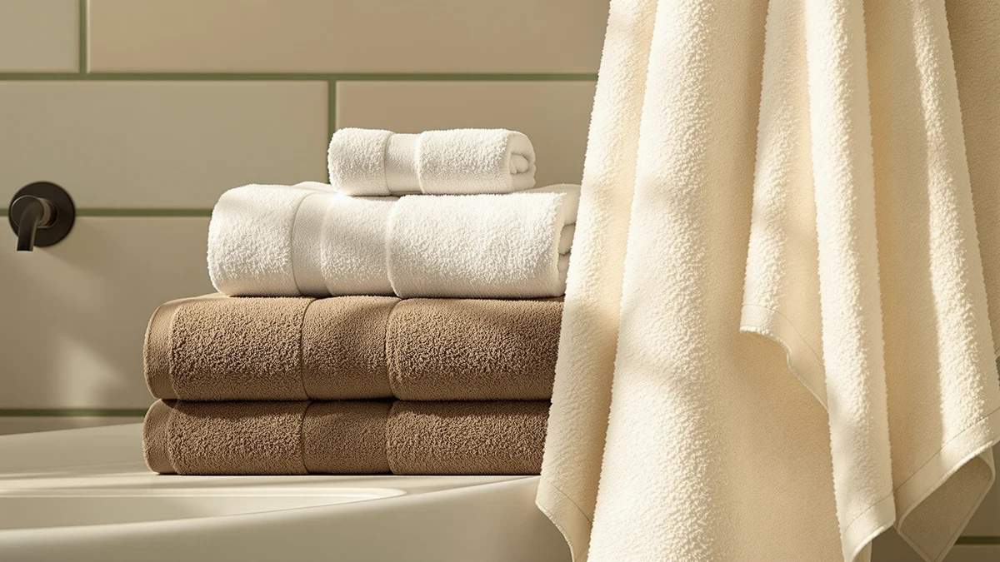

The Best Quick-dry Hand Towels (2026)
Prices and picks verified as of September 2026. Independent, reader-supported reviews.


Quick Answer
For most bathrooms, the LANE LINEN 100% Cotton Bath set is our pick for the best quick-dry hand towels: a 24-piece cotton bundle with a weave light enough to dry between uses instead of sitting damp on the hook. If you want a faster-drying, more compact option, the Hicober Microfiber wrap dries quicker but trades the flat hand-towel shape for a wrap-style microfiber design.
Our pick: LANE LINEN 100% Cotton Bath, $59.99 Check Price on Amazon
Bottom line: our top pick is the LANE LINEN 100% Cotton Bath Towels Set - 24 PCs - Durable at $74.99. The best budget option is the M-bestl 2 Pack Microfiber Hair Towel Wrap at $9.98.
Things to Know Before You Buy
- Fiber decides dry time. Microfiber towels like the Hicober and M-bestl wraps shed water fastest because the synthetic fiber holds less moisture in its core, while cotton takes longer regardless of weave. That fiber difference is the whole reason shoppers search for quick-dry hand towels instead of a standard cotton set.
- Weight works against speed. A dense, heavy terry towel feels plush but holds more water in its loops. Lighter cotton sets, like the Tens Towels pieces at 30 x 60 down to 13 x 13 inches, dry faster than an oversized single bath sheet.
- Buy in sets, not singles. A hand towel gets used and rewashed constantly. Multipacks such as the Utopia 6-Pack or LANE LINEN 24-piece set keep a dry towel on the hook while another sits in the laundry.
- Skip fabric softener. Softener coats cotton fibers with a waxy residue that slows both absorbency and dry time, undoing the main advantage of a quick-dry towel.
- Price per towel beats sticker price. The $9.98 M-bestl two-pack can cost less per towel than a single $59.99 set, so compare the per-unit cost before you decide.
The best quick-dry hand towels solve a specific annoyance: a towel that stays damp on the hook long after you dry your hands, then picks up a sour smell before wash day. A heavy cotton towel from a big-box multipack looks plush in the store, but a thick, tightly woven pile traps water in its fibers and takes half a day to dry out in a humid bathroom. That lag creates the mildew smell, and a hand towel built to dry fast avoids it.
We researched seven hand towel sets, from ring-spun cotton multipacks to compact microfiber wraps, and compared fiber type, weave, and dimensions using each brand's published specs alongside patterns across verified Amazon owner reviews. A lower-density cotton towel with a looser terry loop releases water faster than a dense, heavyweight version, and microfiber dries fastest of all because the fiber itself holds less water per square inch. Our top pick, the LANE LINEN 100% Cotton Bath set, pairs everyday cotton comfort with a weave light enough to dry between uses at $59.99.
Below you'll find a pick for nearly every bathroom, whether you want a single well-priced cotton multipack, a compact microfiber towel for a gym bag, or a budget set that still dries fast enough for daily rotation. Each entry lists honest trade-offs, because a towel that dries quickly but feels rough against skin isn't right for everyone. If price matters most, start with the budget picks; if plushness matters more than speed, the Cotton Paradise Turkish set below deserves a look.
Why You Should Trust Us
Best Bath Towels is a research-based review site edited by Ilane Tall, who covers home and bath textiles and has spent years comparing towel materials, weave types, and owner feedback across hundreds of Amazon listings. We do not own or physically test every towel we cover, and we do not run a fake testing lab. Instead, we compare manufacturer specs, including material, dimensions, and set count, against patterns across thousands of verified owner reviews, and we flag recurring complaints about shedding, thinning, or towels that stay damp longer than advertised.
For this guide to the best quick-dry hand towels, we focused on fiber type and weave because those two factors control dry time more than any marketing claim on the package. When a set has a real weakness, whether that's a slower-drying weave or a smaller size than the price suggests, we say so directly.
How We Picked
To build this list of the best quick-dry hand towels, we started by screening for fiber and weave, since those two variables determine dry time more than any other spec. We prioritized 100% cotton towels with a moderate terry loop instead of an overly dense one, plus microfiber towels marketed specifically for fast absorption and low weight, because both categories consistently dry faster than heavyweight, high-density cotton.
From there we compared price per towel across each set size, since a hand towel wears out and gets rewashed far more often than a bath towel. We also read through owner reviews to flag recurring complaints about shedding, thinning, or towels that never fully dry between uses. Sets that held up across these checks made the cut, and products that fell short on dry time, durability, or price per towel appear in The Competition section below.
How We Compared
We compared each hand towel set using the material, size, and pricing data each brand publishes, verified against current Amazon listings, rather than a physical drying test. For fiber and weave, we checked whether a towel is 100% cotton, a cotton blend, or microfiber, since fiber type is the single biggest factor in how fast a towel releases moisture. For sizing, we compared the individual towel dimensions inside each set, including hand towel, bath towel, and washcloth sizes where a set includes them, rather than judging a set only by its total piece count.
We weighed price per towel instead of the sticker price on the box, since a 24-piece set and a 2-piece set solve different problems. Finally, we read through verified owner reviews for each product and looked specifically for recurring mentions of dry time, shedding, and how the towels held up after repeated washing. None of the towels here received a numeric score. We ranked every quick-dry hand towel in this guide by how well its fiber, size, and price line up with what fast drying actually requires.
Our Picks

LANE LINEN 100% Cotton Bath
What we like
- 24 pieces cover bath towels, hand towels, and washcloths in one order
- The 100% cotton weave releases water faster than heavier terry styles
- A consistent white colorway matches any bathroom decor
- The large set size keeps a dry towel on the hook at all times
Flaws but not dealbreakers
- At $59.99 it costs more upfront than a single hand-towel multipack
- 24 pieces take up more linen closet space than a compact set
- White cotton shows stains faster than darker colorways
| Material | 100% cotton |
| Size | 24 Piece Towel Set |
The LANE LINEN 100% Cotton Bath set is our pick for the best quick-dry hand towels because it solves the whole-bathroom version of the problem, not one towel at a time. The set bundles 24 pieces, so bath towels, hand towels, and washcloths all come from the same evenly woven 100% cotton stock, which dries noticeably faster than the dense, heavyweight terry in many big-box multipacks. Because every piece shares the same weave, you get consistent dry time across the whole set instead of one fast-drying towel and several that stay damp.
At $59.99 for 24 pieces, the per-towel cost works out lower than buying hand towels and bath towels separately, and the set size lets you rotate towels through the wash without ever reaching for a damp one. The trade-off is closet space: 24 pieces take up more shelf room than a two- or four-piece hand towel set, and if you only need hand towels, this bundle includes more bath towels and washcloths than some households want. For anyone restocking an entire bathroom at once, it's the most efficient quick-dry option on this list.

Tens Towels Pack of 8
What we like
- A thinner-than-average weave cuts dry time noticeably versus standard terry
- Eight pieces span bath towels, hand towels, and washcloths
- The compact folded size takes up less closet and rack space
- At $31.95 it undercuts the LANE LINEN set by nearly half
Flaws but not dealbreakers
- The thinner weave feels less plush than a heavyweight cotton towel
- Some owners report a break-in period before the towels reach full softness
- The lighter weave shows wear sooner than a dense, heavy terry towel
| Material | 100% cotton |
| Size | 30 x 60 inches, 16 x 28 inches, 13 x 13 inches |
Tens Towels built its Pack of 8 around a thinner-than-average cotton weave, and that choice lands it as our runner-up for the best quick-dry hand towels. A heavyweight terry towel holds water deep in its loops, but this lighter 100% cotton weave releases moisture faster, so a hand towel used mid-morning dries again by evening instead of staying damp on the hook. The set covers three sizes, from 30 by 60 inch bath towels down to 13 by 13 inch washcloths, so the same fast-drying weave carries through every towel in the bathroom.
At $31.95 for eight pieces, it costs about half of our top pick while still covering bath towels, hand towels, and washcloths in one order. The thinner weave that speeds up dry time also means these towels feel less plush than a dense terry set, and a few owners note the towels need several washes before they soften up fully. Choose the Cotton Paradise set below if plush thickness matters more than dry time; choose this one if a towel that actually dries between uses is the priority.

Utopia Towels 4 Pack Premium
What we like
- The four-piece size fits a single bathroom without excess
- 100% cotton construction dries faster than blended fabrics
- At $29.44 the cost per towel stays reasonable for a small set
- Uniform sizing makes planning hooks and towel bars simple
Flaws but not dealbreakers
- The smaller pack means fewer towels in rotation between washes
- The listing doesn't break out hand-towel-specific sizing separately
- Utopia's cotton runs slightly thinner than premium long-staple options
| Material | 100% cotton |
| Size | 4 Pack |
The Utopia Towels 4 Pack Premium set is a straightforward pick for anyone who wants quick-dry hand towels without committing to a full 24-piece bundle. Four pieces of 100% cotton give you a spare towel while one is in the wash, and the moderate weave dries faster than thick, spa-style towels built for maximum plushness. It's a practical middle ground: cotton comfort with a weave light enough to actually dry between uses.
At $29.44 for four towels, the price sits comfortably below our top two picks while still delivering real 100% cotton construction. The smaller set size is the main limitation: with only four towels in rotation, a busy household runs through clean ones faster than with an eight- or 24-piece set, so expect to wash more often. For a single bathroom or a guest room where the towel doesn't see heavy daily use, the four-piece size fits well.

Utopia Towels 6 Pack Medium
What we like
- Six towels at 24 by 48 inches balance size and dry time
- The price per towel beats the smaller 4-pack from the same brand
- 100% cotton construction holds up to frequent washing
- The mid-size dimensions dry faster than an oversized bath sheet
Flaws but not dealbreakers
- At 24 by 48 inches these run smaller than a full bath sheet
- This particular set skips washcloths or dedicated hand towels
- The basic weave lacks the plush feel of premium Turkish cotton
| Material | 100% cotton |
| Size | 24" x 48" - 6 Pack |
The Utopia Towels 6 Pack Medium set earns the budget pick spot because it delivers six 100% cotton towels at 24 by 48 inches for $33.99, which works out to less than $6 per towel. That mid-size dimension helps it dry faster than an oversized bath sheet, since less fabric means less water to hold and release. For a household that goes through towels quickly, six pieces in rotation keep a dry one available almost always.
The catch is sizing expectations. At 24 by 48 inches, these run smaller than a traditional 30 by 56 inch bath sheet, so shoppers expecting full-size bath towels should treat this as a mid-size set rather than a luxury one. The weave is also more basic than the Cotton Paradise or LANE LINEN options, without the same plush hand feel. For the price, it remains the most efficient way to stock a bathroom with towels that dry reasonably fast.

Cotton Paradise 100% Cotton Turkish
What we like
- Turkish cotton feels noticeably softer than standard ring-spun cotton
- The three-size set covers bath towel, hand towel, and washcloth sizing
- A breathable weave keeps dry time closer to lighter cotton sets than heavy terry
- At $39.99 it's a fair price for genuine Turkish cotton construction
Flaws but not dealbreakers
- The plusher pile dries somewhat slower than the Tens Towels set
- It costs more than the Utopia budget options
- Turkish cotton can shed lightly during the first few washes
| Material | 100% cotton |
| Size | (27"x54") +( 16"x28") + (13"x13") |
Cotton Paradise built its 100% Cotton Turkish set for anyone who wants the soft, plush feel of a premium towel without landing on a fabric that stays wet all day. Turkish cotton uses long-staple fibers that breathe better than standard ring-spun cotton, so despite the plush hand feel, the towels release water at a reasonable pace. The set covers three sizes, from 27 by 54 inch bath towels to 13 by 13 inch washcloths, so the same weave carries through every piece.
At $39.99, it costs more than the budget Utopia sets but less than a designer Turkish towel line, and reviewers consistently note the softness holds up over repeated washing. The trade-off against our top picks is dry time: the denser, plusher weave takes somewhat longer to dry than the thinner Tens Towels set, though it still outperforms heavy, high-pile bath sheets. Pick this one if softness matters as much as speed to you.

Hicober Microfiber Hair Towel Wrap
What we like
- Microfiber construction dries faster than any cotton option on this list
- The lightweight design makes it easy to store or pack for travel
- At $12.99 it's the second-lowest price in this roundup
- The button closure keeps the wrap secured without extra effort
Flaws but not dealbreakers
- The wrap design suits hair, not a standard flat hand towel shape
- Microfiber feels less soft against skin than cotton
- It ships as a single unit rather than a multipack, so replacing it means reordering
| Material | Microfiber |
| Size | Large |
The Hicober Microfiber Hair Towel Wrap is the fastest-drying pick in this roundup, and it earns its spot because microfiber inherently sheds water faster than any cotton weave here. The fiber itself holds less moisture in its structure than cotton, so it goes from soaked to damp in a fraction of the time. This pick is a wrap-style towel built primarily for hair, with a button closure rather than the flat rectangular shape of a standard hand towel.
At $12.99, it's one of the least expensive picks here, and several owners mention it dries hair noticeably faster than a bath towel wrapped turban-style. Skip this one if you need a flat hand towel for a sink or kitchen, since the shape won't match that job. Choose it if fast drying and low weight matter more than a traditional towel format, such as for travel or a gym bag. Microfiber also feels less soft against skin than cotton, the honest trade-off for prioritizing speed.

M-bestl 2 Pack Microfiber Hair
What we like
- At $9.98 for two towels, it's the lowest price per towel here
- Microfiber dries faster than any cotton set in this list
- The compact 25.6 by 9.8 inch size packs easily into a bag
- The two-pack keeps a backup ready while one is in the wash
Flaws but not dealbreakers
- Smaller dimensions than a standard hand towel limit coverage
- Microfiber lacks the plush feel of a cotton towel
- It suits hair or travel use better than everyday sink duty
| Material | Microfiber |
| Size | 65X25 cm/25.6*9.8INCH |
The M-bestl 2 Pack Microfiber Hair towel set rounds out this list as the lowest-priced option, and it shares the same fast-drying advantage as the Hicober pick above: microfiber releases water quickly, so these towels are ready to use again in a fraction of the time a cotton hand towel needs. At 65 by 25 centimeters, or about 25.6 by 9.8 inches, each towel runs smaller than a standard hand towel, which keeps it compact enough for a gym bag or carry-on.
At $9.98 for two towels, it comes out to under $5 per towel, the lowest per-unit price in this roundup. The smaller size and microfiber feel mean it works better as a secondary or travel towel than as the main hand towel by a bathroom sink, where a full-size cotton towel gives more coverage. If you want a cheap, fast-drying backup rather than a full replacement for cotton, pair it with a primary set like the LANE LINEN or Tens Towels above.
Quick Comparison
| Product | Material | Price | Rating | Best for | Get it |
|---|---|---|---|---|---|
| LANE LINEN 100% Cotton Bath | 100% cotton | $59.99 | 4 | Full bathroom restocking | View on Amazon → |
| Tens Towels Pack of 8 | 100% cotton | $31.95 | 4 | Quick-dry cotton for daily use | View on Amazon → |
| Utopia Towels 4 Pack Premium | 100% cotton | $29.44 | 4 | Single bathroom, budget-friendly | View on Amazon → |
| Utopia Towels 6 Pack Medium | 100% cotton | $33.99 | 4 | Lowest price per towel | View on Amazon → |
| Cotton Paradise 100% Cotton Turkish | 100% cotton | $39.99 | 4 | Plush feel without slow drying | View on Amazon → |
| Hicober Microfiber Hair Towel Wrap | Microfiber | $12.99 | 4 | Fastest dry time, hair wrap | View on Amazon → |
| M-bestl 2 Pack Microfiber Hair | Microfiber | $9.98 | 4 | Cheapest backup towel | View on Amazon → |
What makes a hand towel dry quickly?
Two things control dry time: fiber and weave.
Are cotton or microfiber hand towels better?
It depends on what you want to optimize.
The Competition
A few towel categories didn't make our list of the best quick-dry hand towels, and it's worth explaining why. We passed on thick, heavyweight terry towels padded past typical density, since that extra loop depth is exactly what traps water and slows dry time, even when a listing markets the towel as quick-dry. We also skipped polyester-cotton blends that don't disclose their exact fiber ratio, because a blend can dry faster or slower than pure cotton depending on the mix, and without a published ratio there's no fair way to compare it against the sets above.
Among the towels we did feature, the two microfiber picks, the Hicober wrap and the M-bestl pack, dry the fastest of the group but trade away the flat, standard hand towel shape a bathroom sink typically needs. For now, the 100% cotton sets from Tens Towels and Utopia strike the better balance between dry time and everyday usability, though our overall pick for the best quick-dry hand towels stays the LANE LINEN 100% Cotton set for its mix of full-set value and a weave that dries between uses instead of sitting damp on the hook.